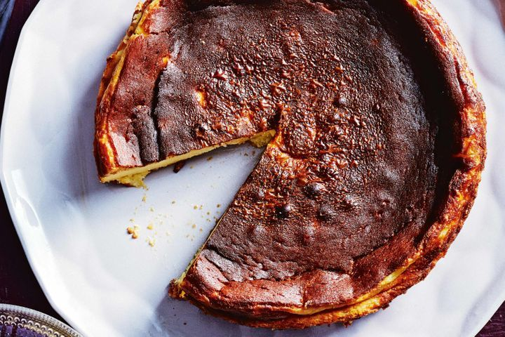

Basque Burnt Cheescake

Burnt Basque Cheesecake is a popular dessert that originated in Basque Country, Spain.
It's a crustless cheesecake that's baked at a high temperature to create a caramelized exterior
and a creamy interior.
Ingredients
- 2 pounds cream cheese, room temperature
- 1 1/2 cups granulated sugar
- 6 large eggs, room temperature
- 2 cups heavy cream
- 1 tablespoon vanilla extract
- 1/4 cup all-purpose flour
- 1/4 teaspoon salt
Steps
- Preheat the Oven - Preheat your oven to 400°F (200°C) and line a 9-inch (23cm) springform pan with parchment paper.
- Mix the Cheesecake Filling - In a large mixing bowl, beat the cream cheese until creamy and smooth. Add in the sugar and continue to beat
until the mixture is light and fluffy. Add in the eggs one at a time, making sure to fully incorporate each egg before adding the next one. Slowly pour in the heavy cream
and vanilla extract, and mix until everything is well combined. Add in the flour and salt, and mix until just incorporated.
- Bake the Cheesecake - Pour the cheesecake mixture into the prepared springform pan and tap the pan a few times on the counter to remove any air bubbles.
Bake the cheesecake for 50-60 minutes, or until the top is deeply golden and burnt in spots, and the center is just set. Allow the cheesecake to cool for at least an hour at
room temperature before serving.
- Serve the Cheesecake - Run a knife around the edges of the cheesecake to loosen it from the pan. Remove the cheesecake from the pan and slice it into
wedges. Serve the cheesecake warm or at room temperature, with fresh berries or whipped cream if desired.